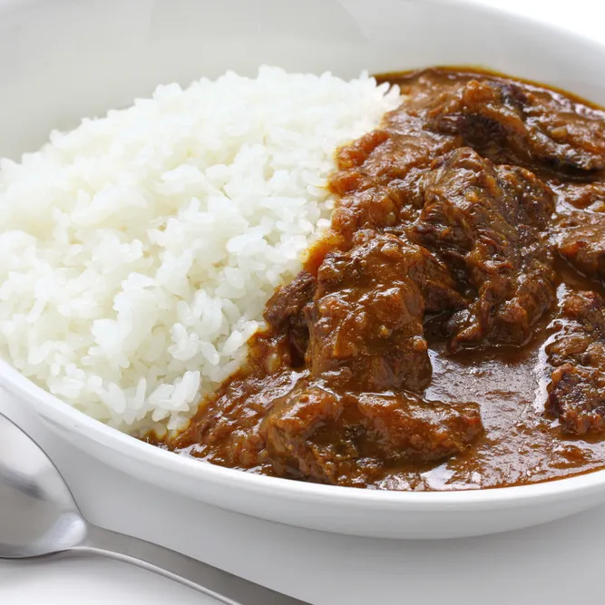

Steak Curry

Description
Steak curry is a rich, deeply comforting dish featuring tender, juicy slices or cubes of seared steak simmered in a highly aromatic, spiced gravy.
Ingredients
For the steak:
- 1 tbsp vegetable or olive oil
- 1/4 tsp salt and black pepper
For the curry base:
- 1 tbsp vegetable oil
- 1 onion, cut into wedges
- 1 red bell pepper, chopped into medium pieces
- 1 green chili, finely chopped
- 3 garlic cloves, minced
- 2 tbsp minced fresh ginger
- 1 (400g) can diced tomatoes
- 240g coconut cream (or the solid part of a can of cold coconut milk)
Spices:
- 2 tbsp curry powder (mild or hot)
- 1 tbsp ground coriander
- 1/2 tbsp ground cumin
- 1 tsp paprika
- 1/2 tsp ground cinnamon
Steps
- Sear the meat: Heat a large skillet over high heat. Brush the steaks with a tablespoon of oil and season both sides with salt and pepper. Cook for 1 minute per side to brown the outside. Remove from the skillet and place on a covered plate.
- Sauté the vegetables: Reduce the heat to medium in the same skillet. Add the remaining tablespoon of oil along with the onion, bell pepper, chili pepper, garlic, and ginger. Stir in all the spices (curry, coriander, cumin, paprika, and cinnamon). Cook, stirring constantly, for 4 minutes.
- Make the sauce: Pour the canned tomatoes and coconut cream into the skillet. Stir well and bring to a boil. Reduce the heat and simmer for 5 minutes.
- Slice and combine the steak: While the sauce is simmering, slice the seared steaks into thin strips. Add the meat and any accumulated juices from the plate back to the skillet.
- Finish and serve: Mix everything together and simmer for an additional 2 minutes to heat the meat through. Serve hot over a bed of white rice and garnish with chopped fresh cilantro.
Home